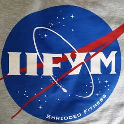

| Home | Workouts | Good Food Diets | |
|
|||
IIFYMOver the last couple of years, a diet with the catchiest of acronyms has taken the natural bodybuilding world by storm. If It Fits Your Macros (IIFYM) What Is It? IIFYM simply means eating a diet that meets your macronutrient needs. To break it down and start from the beginning, macronutrients are the three main food groups – proteins, carbohydrates and fats. Each macronutrient has its own role to play, and is needed in different quantities depending on your goals, metabolism, training history, and many other factors. IIFYM eating flies in the face of conventional dieting, and the notion that anyone who wants to get in shape has to eat a stringent diet, composed of a limited number of so-called “clean foods,” needs to eat at precise times throughout the day, must have certain types of food pre and post workout, and that any deviation from this strict structure is breaking the rules of dieting. The idea of IIFYM is simple – you eat whatever foods you like the fill your allotment of proteins, carbs and fats. |